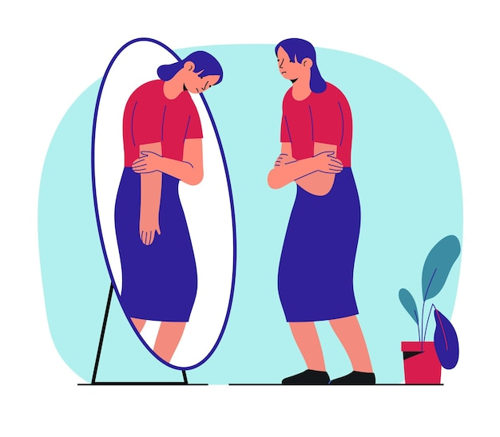
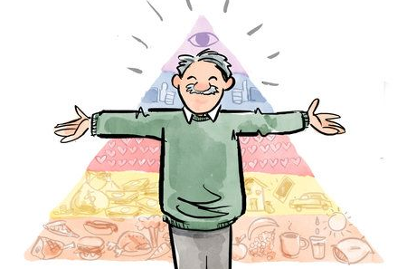

La autoestima y la autoaceptación son fundamentales para el bienestar psicológico porque influyen en cómo una persona se valora, se relaciona con los demás y enfrenta desafíos. Desde la psicología humanista, Abraham Maslow y Carl Rogers destacan la estima y la congruencia para la autorrealización; además, la Escala de Autoestima de Morris Rosenberg analiza su vínculo con autovaloración, autocompasión y salud mental.
Este proyecto busca profundizar en los principales enfoques teóricos sobre la autoestima y la autoaceptación, analizando sus componentes, tipos y manifestaciones. También explora la relación entre autoconcepto, diálogo interno y autocompasión como claves para fortalecer la seguridad emocional y reflexionar críticamente sobre su importancia para el crecimiento personal y la salud mental.

Este proyecto se realiza con el propósito de promover la importancia de la autoestima y la autoaceptación en adolescentes y adultos, ya que estos aspectos influyen directamente no solo en el bienestar emocional sino también en la toma de decisiones y las relaciones personales. Actualmente, muchas personas enfrentan inseguridades y presión social que pueden afectar la forma en la que se perciben a sí mismas. Por medio de una página web se busca no solo informar sino crear un espacio de reflexión y tips que permitan fortalecer la confianza personal y fomentar una mejor salud mental.
El valor de la autoaceptación y la superación personal
Organización de tematicas
Definir metas y resultados claros para orientar el desarrollo del proyecto.
Más información
Presentar teorías y estudios previos que respaldan el tema investigado.
Más informaciónExplicar conceptos esenciales para comprender y contextualizar el contenido.
Más informaciónListar los sitios web y recursos digitales utilizados para la investigación.
Más información